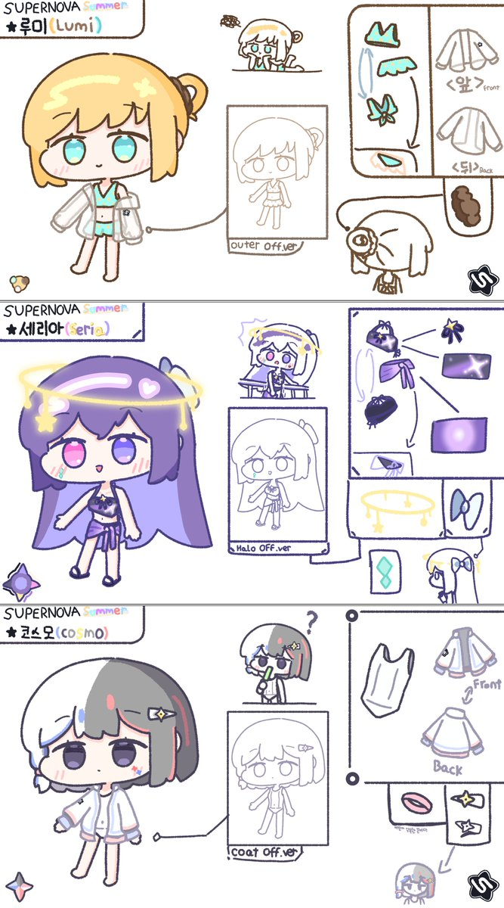

RT @MAnaReSs_: 아르케아 팀 커뮤니티
《☆SUPERNOVA☆》에서 이번에 여름을 맞이하여 마스코트의 수영복 의상 시트 및 이모지를 제작하였습니다.
마스코트들에게 수영복 입히고 싶은 생각이 여기까지 갈 줄은 제가 기획하고 저지르긴 했지만,…

닉없다
@MAnaReSs_
아르케아 팀 커뮤니티
《☆SUPERNOVA☆》에서 이번에 여름을 맞이하여 마스코트의 수영복 의상 시트 및 이모지를 제작하였습니다.
마스코트들에게 수영복 입히고 싶은 생각이 여기까지 갈 줄은 제가 기획하고 저지르긴 했지만, 저도 몰랐네요;; 무튼, 재밌었습니다!! https://t.co/AuWA1bcEu0